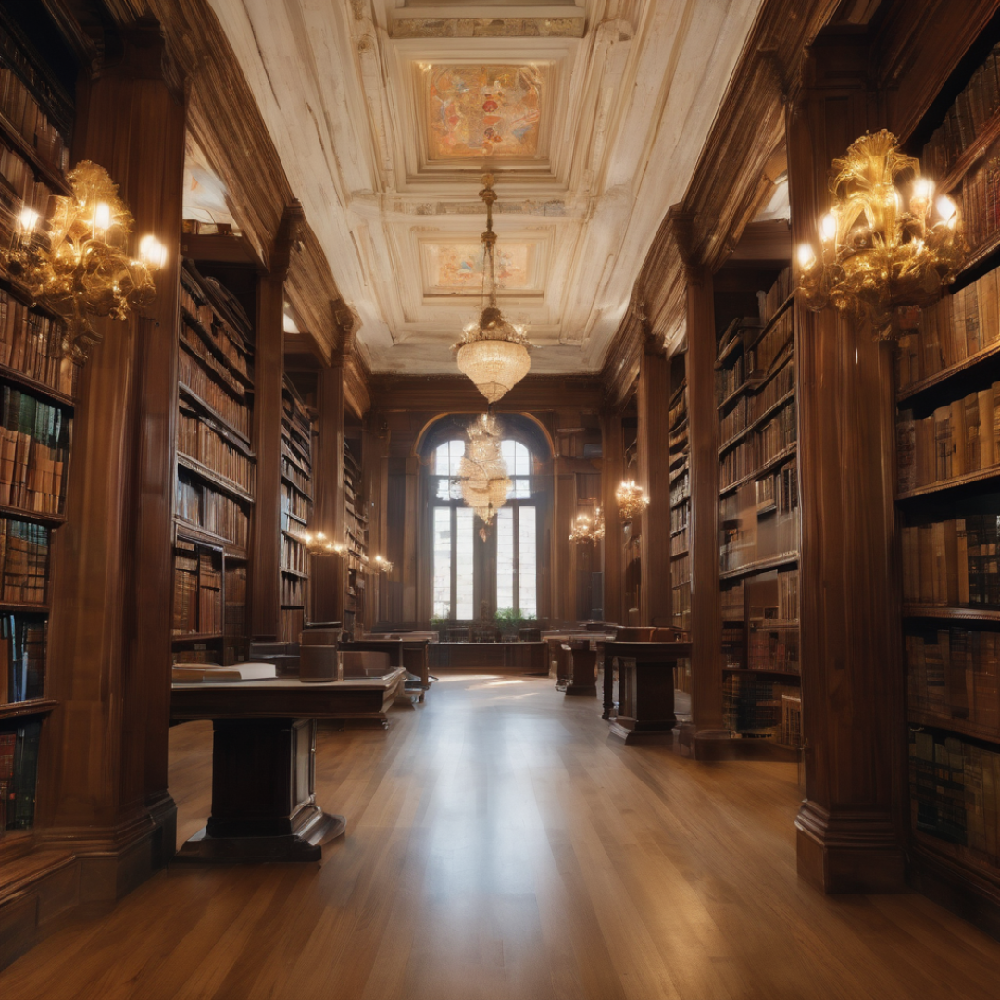

 Havia uma pequena cidade chamada Leiturópolis, situada no coração de um vale encantador. A cidade era conhecida por sua beleza natural e pela comunidade que valorizava a educação e a literatura. No entanto, a cidade carecia de uma biblioteca, um lugar onde os habitantes pudessem se perder em histórias e adquirir conhecimento. Selline e Thalita eram duas amigas inseparáveis que compartilhavam uma paixão ardente por livros. Elas frequentemente conversavam sobre como suas vidas seriam mais ricas se pudessem ter acesso a uma biblioteca em sua cidade. Em uma noite estrelada, Selline e Thalita tiveram uma ideia audaciosa: por que não criar a própria biblioteca que elas sonhavam? Elas começaram a pesquisar, reunir recursos e criar um plano. Com determinação e entusiasmo, Selline e Thalita arrecadaram fundos da comunidade local e conseguiram doações de livros. Um antigo prédio desocupado no centro da cidade foi gentilmente cedido pela prefeitura para abrigar a biblioteca. A Biblioteca Literária Maravilivros, como decidiram chamá-la, logo se tornou uma realidade. O espaço foi cuidadosamente renovado, com prateleiras de madeira feitas à mão, poltronas confortáveis e janelas amplas que deixavam a luz do sol iluminar as estantes. A comunidade abraçou o projeto de coração aberto, oferecendo seu tempo e habilidades para tornar a biblioteca um lugar aconchegante e acolhedor. Selline e Thalita dedicaram horas intermináveis a catalogar os livros, organizar eventos literários e contar histórias para crianças nas tardes de sábado. A Biblioteca Literária Maravillivros rapidamente se tornou o coração da cidade, um lugar onde jovens e idosos podiam se reunir para explorar um mundo de conhecimento e imaginação. Além de fornecer acesso a uma vasta coleção de livros, a biblioteca promovia clubes de leitura, palestras, oficinas de escrita e exposições de arte locais. Selline e Thalita também estabeleceram um programa de bolsas de estudo para ajudar jovens talentosos a prosseguir com sua educação. A biblioteca se tornou um exemplo de como a paixão e a determinação de duas mulheres visionárias poderiam transformar uma comunidade. Selline e Thalita, através de sua dedicação e amor pela literatura, deixaram um legado duradouro em Leiturópolis, inspirando gerações a explorar as maravilhas da leitura e da educação. A Biblioteca Literária Maravilivros, criada por essas duas amigas, tornou-se um farol de conhecimento, imaginação e união na cidade.